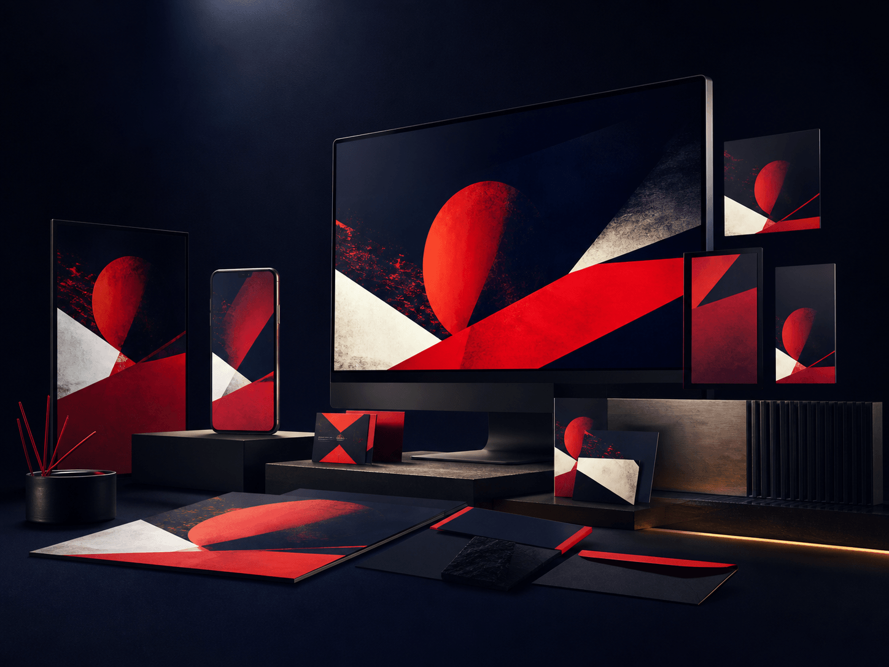

Direction
Digital
Marketing
Channel thinking, campaign planning and content direction designed to build a purposeful digital presence.
- Digital strategy
- Campaign planning
- Content direction
- Social ecosystems
Mad Men Digital
We live and breathe your brand—then shape the identity, visuals and digital experiences that help it show up at its best.
Build your digital presenceWhat we do

You live, breathe and exist with your brand. So will we.
We get close enough to understand what your brand means, how it should feel and where it needs to go.
Then we shape one connected presence—recognisable in every expression and confident everywhere it appears.
Digital marketing that gives every channel a clear role in moving the brand forward.
Identity systems that make the brand recognisable, coherent and ready to grow.
Visual and graphic design that turns the brand idea into a distinctive everyday language.
Websites that bring story, usefulness and interaction together in one purposeful destination.
Digital capabilities
From the first strategic decision to the final digital touchpoint, every capability works from one shared understanding of the brand.
Direction
Channel thinking, campaign planning and content direction designed to build a purposeful digital presence.
Recognition
A clear visual foundation that makes the brand recognisable wherever people meet it.
Expression
A distinctive visual language built to remain consistent without becoming repetitive.
Interaction
Responsive digital experiences that make the brand clear, useful and memorable.
Everyday impact
Thoughtful brand applications that keep communication sharp across every format.
One connected brand system
Every expression should feel different enough for its context, but connected enough to strengthen the same memory.
One clear
brand idea.
Defines what the brand stands for and the direction every touchpoint should move.
MeaningCreates the visual codes that make the brand easy to recognise and hard to confuse.
MemoryGives the brand a consistent voice while leaving room for fresh ideas and formats.
VoiceTurns the brand into a useful, responsive and purposeful digital experience.
ExperienceApply the system with enough creative energy to earn attention and inspire action.
MovementNot five disconnected outputs.
One presence that compounds.How we build digital presence
We move from understanding to execution without losing the thought that made the work distinctive in the first place.
Listen
We learn the ambition, audience, category and culture before deciding what the brand needs to become.
Focus
We turn what we learn into a clear digital point of view, priorities and principles for the work ahead.
Create
Identity, visuals, interfaces and content are developed as connected parts of one adaptable brand language.
Launch
We translate the system across websites, campaigns and everyday assets with care for every format and screen.
Evolve
We observe what works, strengthen what matters and help the digital presence grow without losing recognition.
Selected digital work
Identity, interaction and campaign thinking brought together across the digital moments that matter.
Built for every digital touchpoint
A strong digital system should travel without losing itself—from the smallest social frame to the largest brand destination.
Different format.
Different behaviour.
Why Mad Men Digital
We work like an extension of your brand team—close enough to understand the details, and clear enough to protect the bigger picture.
Think deeply.We begin with what makes the brand meaningful, not with a predetermined visual style or platform trend.
Strategy, identity, content and experience are developed as parts of one system instead of separate assignments.
We create recognisable rules with enough flexibility for the brand to stay fresh across formats and moments.
We move from idea to real-world output with the craft, pace and attention needed for modern digital channels.
Powered by the Madverse Collective
Mad Men Digital can lead the digital presence or connect with the right Madverse specialists around a larger growth challenge.
Connect brand direction to the wider growth plan.
Turn the digital system into attention-building campaigns.
Deepen identity and experience through specialist design craft.
Bring the visual world to life across film and content.
Translate the presence into measurable digital momentum.
Build robust products and platforms behind the experience.
Have a brand to grow, a
digital presence to shape or
something worth building?